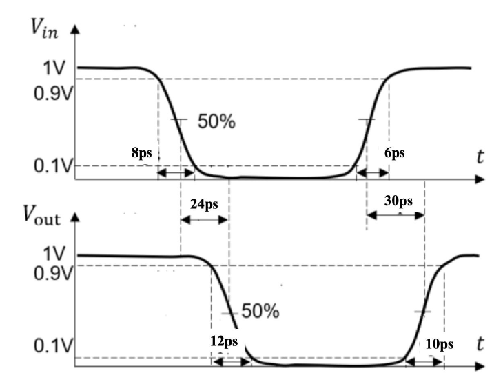

定性论述 · 第 1 章 · 自编补充论述
本题涉及的概念
传播延时及最大、最小延时
传播延时比较输入触发翻转与输出响应各自经过电平的时刻。、 的下标指输出下降、上升；平均延时为 。
转换时间与传播延时的区别
上升时间 通常是同一波形从到的时间；下降时间 是从到的时间。它们描述边沿本身的快慢，传播延时描述输入到输出的响应滞后。
定性论述题
分别说明 、、、 的测量含义，并说明平均延时、最大和最小延时如何区分。
查看关联原题图表
读图：横轴表示时间，两条波形使用同一时间轴。传播延时比较输入、输出的时刻；、只比较输出自身的与时刻。本图边沿为测量示意。
模型示意 · 非实物比例
模型参考：chapter1-introduction 20260914.pdf，PDF 第 43–44 页

参考答案与评分要点
考试作答
是输入触发翻转经过电平到输出下降经过的时间， 对应输出上升，HLLH均按输出方向命名。 通常测同一波形到， 测到。平均延时是两种传播延时的算术平均，本章最大与最小延时分别取两者的最大、最小；若有多路径或其他输入情形需继续比较。
评分要点
- 正确输出方向
- 输入输出定义
- 到边沿定义
- 区分平均与极值
为什么这样回答
传播延时比较两个波形，转换时间只看一个波形的边沿，二者回答的问题不同。
出处与回查
PPT/chapter1-introduction 20260914.pdf· PDF 第 43、44 页
关联题目：